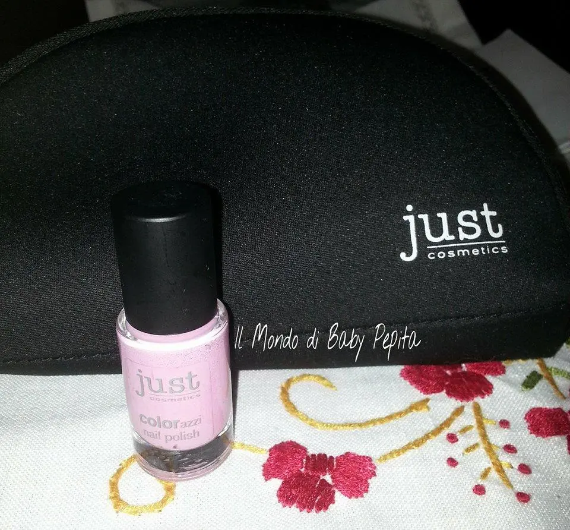
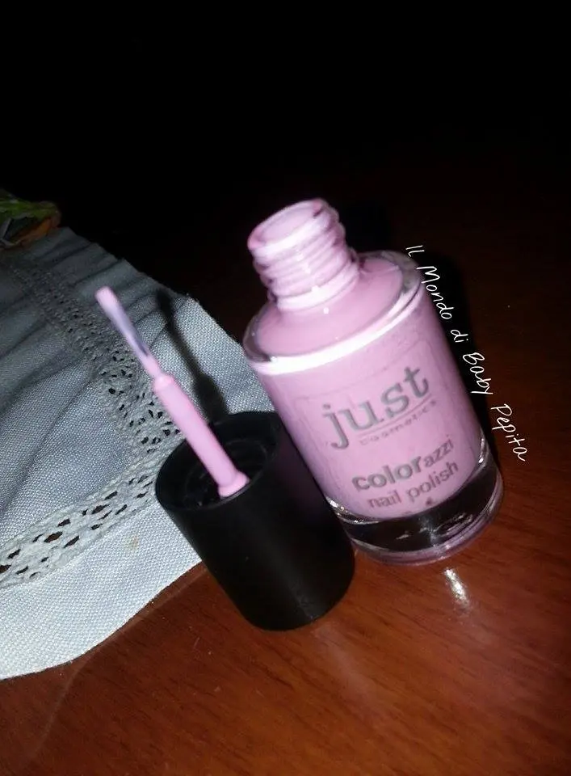
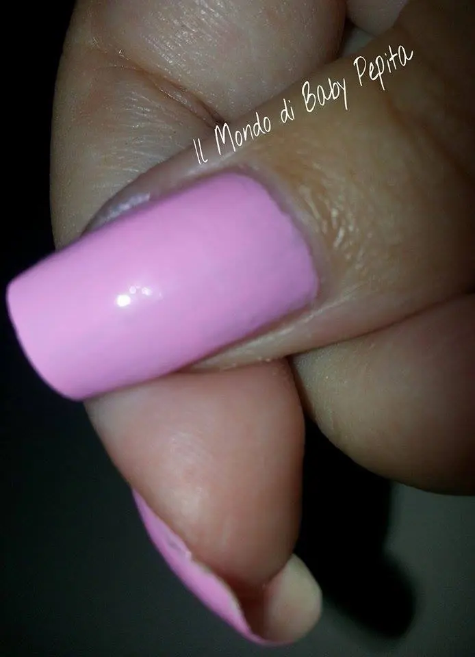
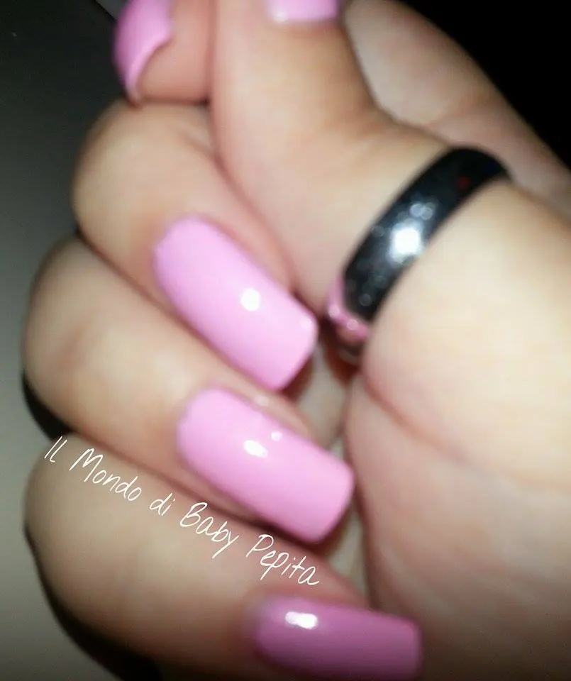
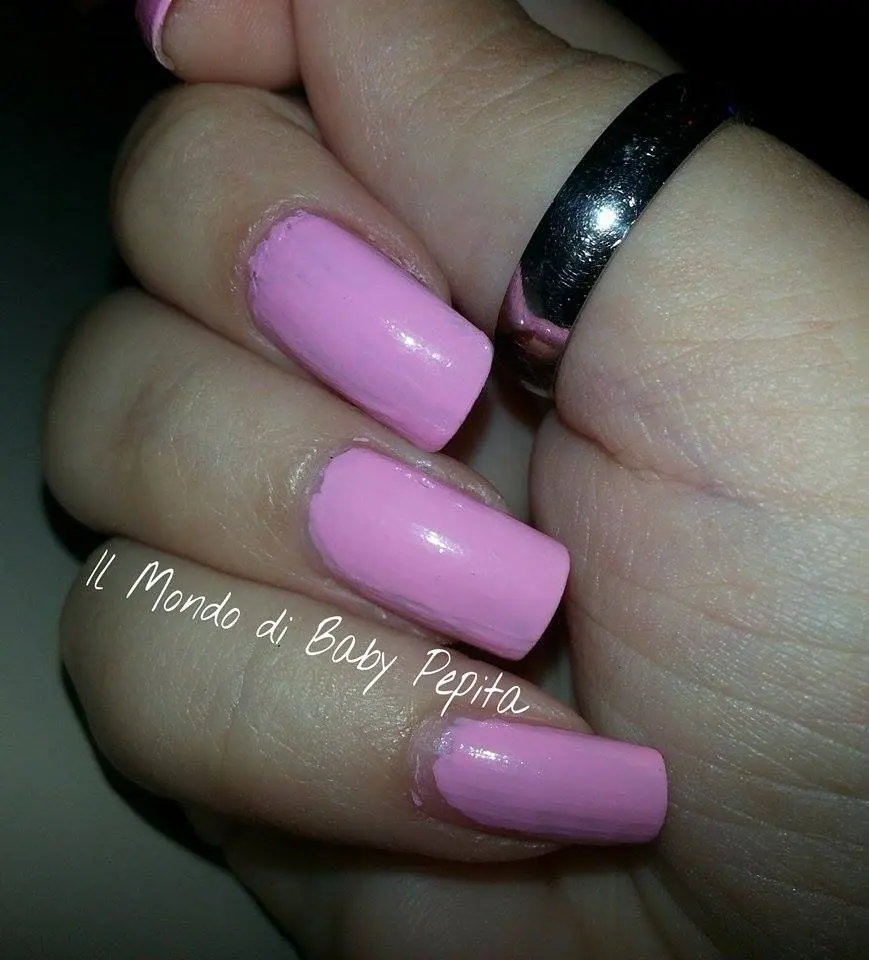

Just Cosmetics - Smaltino
Salve bella gente.
Io sono tornata ancora una volta con questo brand tedesco la JUST COSMETICS. . Vi avevo anticipato nell'altro articolo che gli smalti li avrei testati ad uno ad uno e di conseguenza recensiti in seguito, separatamente dal make-up.

Parliamo ancora dunque di questa bellissima marca, ahimè credo poco conosciuta in Italia, ma che non tarderà a farsi spazio. .
Oggi vi mostro un colore bellissimo . .

Color Azzi - 090 be exciting
Ed è lui . . Un rosa confetto
Questo smalto per le unghie è ad asciugatura rapida è disponibile in ben 29 colorazioni. Combina un'elevata copertura con una brillantezza intensa . .


BELLISSIMO!
Mi piace molto come colora e anche la durata e soprattutto sembra che allunga le unghiette ahahah
(sarà una mia impressione ma mi piace moltissimo l'effetto che fa sulle mie dita)

Già come lo stendi vedi subito bellezza del colore, in reatà io mi sento un tantino Barbie con questo fantastico smaltino ihihih

Ho preferito fare una seconda passata per avere un colore più carico. . e ragazze è davvero bello. .
Subito si asciuga e non fa grumi. .
Insomma ne vale davvero la pena. .
Non ho voluto usare il top coat di chiusura perchè già di suo è bello lucido. .
INCI: 090: INGREDIENTS: BUTYL ACETATE, ETHYL ACETATE, NITROCELLULOSE, ADIPICACID/NEOPENTYL GLYCOL/TRIMELLITIC ANHYDRIDE COPOLYMER, ISOPROPYLALCOHOL, ACETYL TRIBUTYL CITRATE, CI 77891, ACRYLATES COPOLYMER,STEARALKONIUM BENTONITE, STYRENE/ACRYLATES COPOLYMER, N-BUTYLALCOHOL, SILICA, DIACETONE ALCOHOL, ETOCRYLENE, CI 15850, CI 19140
